Préparation professeur
Cette page te prépare à donner tes premiers cours. Suis les étapes dans l'ordre et coche chacune quand elle est terminée.
Étape 1 terminée. Tu es à l'étape 2 sur 7.
C'est fait. Tu fais maintenant partie de l'équipe de professeurs. Il te reste 6 étapes avant ton premier cours.
Crée ton Calendly avec le compte Google de l'agenda où tu mets tes cours, et choisis Google Meet comme lieu. Les cours fixes (par exemple tous les mercredis à 18 h), tu les mets directement dans ton Google Agenda, avec l'élève en invité et un lien Meet.
Étape 2.1. Copie le lien de ton événement et envoie-le à Robin sur WhatsApp.
Envoyer mon lien sur WhatsAppLe message s'écrit tout seul. Remplace « COLLER LE LIEN » par le lien de ton événement Calendly, puis envoie.
Fathom enregistre tes cours sur Google Meet. Ton élève récupère la rediffusion de son cours, et nous recevons le suivi de tes cours. C'est gratuit.
Avant de commencer : un ordinateur Mac ou Windows et le navigateur Google Chrome. Fathom ne fonctionne pas sur téléphone, tablette, Chromebook ni Linux.
Crée un rendez-vous test dans Google Agenda
Avec le même compte Google que ton Calendly, crée un événement demain et clique sur « Ajouter une visioconférence Google Meet ».
Important : avec une adresse Gmail, Fathom exige au moins 1 rendez-vous Google Meet dans les 7 prochains jours pour valider l'inscription. Sans ce rendez-vous, l'inscription est bloquée et l'adresse ne peut plus être utilisée.
Inscris-toi sur Fathom
Clique sur « Créer mon compte Fathom » plus bas, choisis Continuer avec Google avec le même compte que ton Calendly, puis accepte l'accès à ton agenda. C'est grâce à l'agenda que Fathom rejoint tes cours tout seul.
Installe l'application Fathom sur ton ordinateur
Télécharge l'application (Mac ou Windows) proposée par Fathom, ouvre-la et connecte-toi. Laisse-la ouverte pendant tes cours.
Installe l'extension Chrome
Dans Fathom, va dans Settings › Fathom Apps › Chrome Extension et clique sur Install. C'est elle qui fait fonctionner Fathom dans Google Meet.
Règle Fathom (page Settings)
Premier menu : All Meetings. Tous tes cours sont enregistrés automatiquement.
Deuxième menu : Summary & recording. Ton élève reçoit sa rediffusion par email après chaque cours, sans rien faire de ton côté.
Default Meeting Summary Template : Enhanced. Le résumé du cours sera pédagogique, pas commercial.
Rubrique Video Conferencing : vérifie que Google Meet est connecté.
Fais le test
Rejoins ton rendez-vous test sur Google Meet depuis ton ordinateur, et aussi depuis ton téléphone (ou une fenêtre de navigation privée) pour qu'il y ait 2 participants. « Fathom Notetaker » demande à entrer : accepte-le. Parle pendant 5 minutes (Fathom ne traite pas les réunions trop courtes), raccroche, et vérifie que l'enregistrement apparaît dans Fathom. Tu peux ensuite supprimer ce rendez-vous de ton agenda.
Si Fathom ne rejoint pas un cours : ouvre l'application Fathom, clique sur Add to Meeting et colle le lien Google Meet. Fathom entre tout de suite.
Étape 3.1. Préviens Robin sur WhatsApp que ton Fathom est prêt. Il t'enverra ton lien Espace prof pour la suite.
Prévenir Robin sur WhatsAppLe message s'écrit tout seul. Tu n'as plus qu'à l'envoyer.
L'Espace prof, c'est ta page personnelle : tes élèves, leurs infos, tes notes, et tous tes cours avec leur rediffusion. Tes cours y arrivent tout seuls depuis ton agenda Google et Fathom : tu n'as rien à déclarer.
Reçois ton lien personnel
Robin t'envoie ton lien sur WhatsApp. Il est unique et secret : ne le partage à personne. Enregistre-le sur l'écran d'accueil de ton téléphone.
Fais les 2 branchements, une seule fois
Dans ton espace, onglet Réglages : (1) partage ton agenda Google avec l'adresse du robot indiquée, et enregistre ton adresse Google ; (2) colle l'adresse donnée dans tes réglages Fathom (Settings › API Access › Add Webhook). Les deux voyants passent au vert.
La règle unique
Chaque cours dans ton agenda a l'élève en invité (l'email de sa fiche) et un lien Google Meet. Les réservations Calendly le font déjà. C'est comme ça que l'élève est reconnu, que Fathom lui envoie sa rediffusion, et que ton cours est compté.
Au quotidien
Après un cours, rien à faire. Ouvre ton espace de temps en temps : la rubrique « À faire » te pose une question seulement quand un cours prévu n'a pas été enregistré (eu lieu ? élève absent ? annulé ?). Et tu peux écrire tes notes sur chaque élève.
Étape 4.1. Tu n'as pas encore reçu ton lien ? Demande-le à Robin.
Demander mon lien sur WhatsAppCalendly ne propose jamais un créneau déjà occupé dans ton Google Agenda. En y mettant tes 5 prières, aucun élève ne peut réserver un cours pendant la prière.
Vérifie que Calendly lit ton Google Agenda
Dans Calendly, va dans Intégrations › Calendriers : ton compte Google doit être connecté, et ton agenda principal coché dans « Vérifier les conflits ».
Ajoute tes horaires de prière
Un outil de l'institut crée automatiquement les créneaux de prière dans ton agenda selon ta ville, chaque jour. Le bouton sera actif dès qu'il est en ligne. En attendant, bloque tes prières à la main dans Google Agenda.
Chaque fin de mois, tu envoies une facture pour le mois écoulé. Tu n'as pas besoin de SIRET ni de logiciel : tu la fais en 2 minutes avec ChatGPT (ou Claude), grâce au texte ci-dessous.
Copie le texte de la facture
Clique sur le bouton Copier le texte. Les coordonnées de Thomas sont déjà dedans.
Tu es mon assistant de facturation. Je suis professeur d'arabe coranique en ligne et je dois faire ma facture du mois pour Thomas Saint-Louis. ÉTAPE 1 — Pose-moi les questions Ne crée pas encore la facture. Commence par me lister les informations dont tu as besoin, en phrases simples. Puis, juste en dessous, écris : "Tu peux me répondre en copiant ce modèle et en le remplissant :" et donne-moi ce modèle dans un bloc de texte à copier : Nom et prénom : Adresse complète (rue, ville, code postal) : Pays : Numéro d'entreprise (ICE au Maroc, NIF en Algérie, matricule fiscal en Tunisie — si tu n'en as pas, écris "aucun") : Numéro de facture (1 pour ta première facture, puis 2, 3, 4… sans sauter de numéro) : Date de la facture (le jour où tu la fais) : Mois facturé : Comment tu es payé : à l'heure OU au forfait Si à l'heure → Nombre d'heures : / Tarif horaire en € : / Détail des cours (facultatif) : Si au forfait → Montant du forfait en € : Moyen de paiement : Virement / PayPal / Wise / Autre Informations de paiement (IBAN ou RIB + BIC, ou email PayPal, ou email Wise…) : ÉTAPE 2 — Vérifie Quand j'ai répondu, vérifie qu'il ne manque rien. S'il manque une information obligatoire, redemande-la. N'invente jamais une information. ÉTAPE 3 — Crée la facture en PDF Une seule page A4, en français, mise en page sobre, sans logo, sans couleurs vives, sans emoji. - Titre : "FACTURE N° [numéro]" et la date. - En haut à gauche : mes informations. Si j'ai écrit "aucun" pour le numéro d'entreprise, n'affiche pas cette ligne. - En haut à droite, le client (ne pas modifier) : Thomas Saint-Louis — À la lumière du Coran 246 avenue de Fronton, 31200 Toulouse, France SIRET : 847 639 077 00035 - Intitulé : "Cours d'arabe coranique en ligne — [mois facturé]". - Si payé à l'heure : tableau Désignation | Quantité (heures) | Prix unitaire | Total. Total = heures × tarif horaire. Si j'ai donné le détail des cours, ajoute un second tableau dessous (Date | Élève | Durée). - Si payé au forfait : tableau Désignation | Forfait mensuel | Total. - Vérifie le calcul deux fois. Montants en euros, avec 2 décimales (ex : 156,00 €). - Encadré "Moyen de paiement" avec uniquement le moyen que j'ai choisi et ses informations. - Mentions en bas de page : "TVA non applicable — prestataire établi hors de France." "Paiement à réception de la facture, selon les conditions prévues au contrat." "Le prestataire est seul responsable de ses déclarations et de ses obligations fiscales et sociales dans son pays de résidence." Donne-moi ensuite le lien de téléchargement du PDF, nommé : Facture_[mon nom]_[mois facturé].pdf
Colle-le dans ChatGPT et réponds à ses questions
Ouvre ChatGPT (ou Claude), colle le texte et envoie. ChatGPT te donne la liste des informations à fournir, avec un modèle : copie le modèle, remplis-le et renvoie-le. Il crée ensuite ta facture.
Vérifie et télécharge le PDF
Relis ton nom, le total et ton moyen de paiement. Si tout est juste, télécharge le PDF. Le mois suivant, tu recommences avec le numéro de facture suivant (1, puis 2, puis 3…).
Tout ce qu'il faut cliquer, dans l'ordre, avec une image à chaque fois. Les ronds rouges numérotés sur les images montrent où cliquer. Tu fais ça une seule fois, sur un ordinateur. Compte 15 minutes. Si tu bloques, appelle Robin : on le fait ensemble.
Ouvre ton espace
Ouvre WhatsApp et clique sur le lien que Robin t'a envoyé (il commence par https://espace-prof). Une page s'ouvre avec « Espace prof » et ton prénom en haut. Sous le bandeau vert, il y a 3 boutons : Accueil, Mes élèves, Réglages. Clique sur Réglages (1). Pour tout ce qui suit, utilise un ordinateur, pas un téléphone.
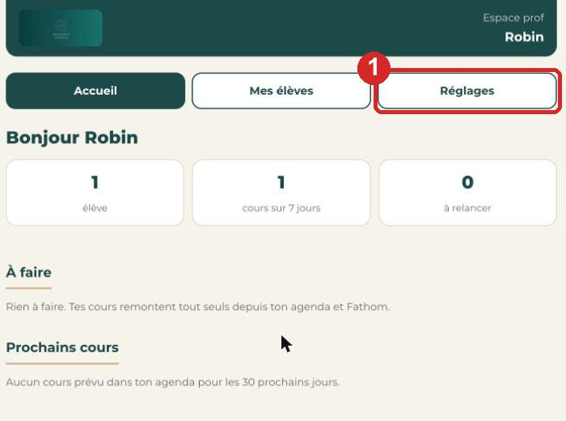
Copie l'adresse du robot
Tu es dans Réglages, partie « 1. Ton agenda Google ». Il y a une case avec une adresse qui finit par gserviceaccount.com : c'est l'adresse du robot. Clique sur le bouton COPIER (1), juste à droite de la case. Un petit message « Copié » apparaît en bas de l'écran. Ne ferme pas cette page : tu y reviens au point 10.
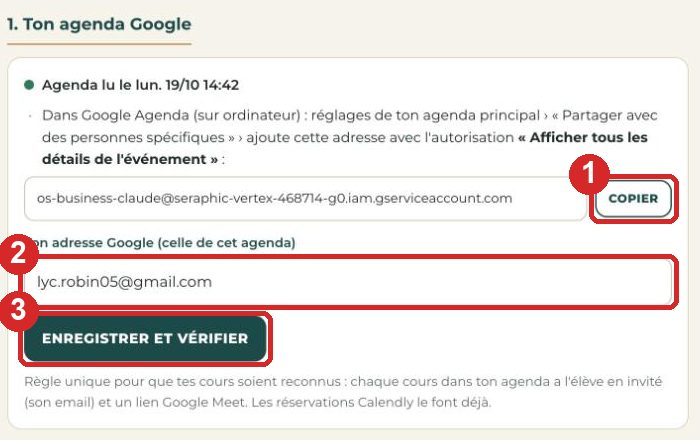
Ouvre Google Agenda
Ouvre un nouvel onglet dans ton navigateur et va sur calendar.google.com. Si Google te demande de te connecter, connecte-toi avec le compte Google que tu utilises pour tes cours (le même que Calendly). À gauche de l'écran, sous le titre « Mes agendas », il y a une liste. Ton agenda, c'est la ligne avec ton nom (1).
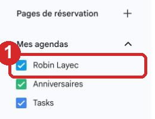
Fais apparaître les trois petits points
Pose la souris sur la ligne avec ton nom, sans cliquer. Trois petits points verticaux apparaissent à droite de la ligne. Clique sur ces trois points (1).
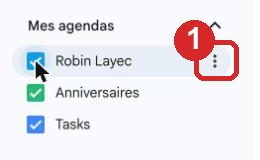
Ouvre « Paramètres et partage »
Un menu s'ouvre. Clique sur Paramètres et partage (1). Une nouvelle page s'ouvre, avec beaucoup de réglages : c'est normal.
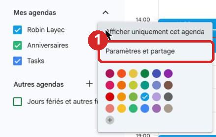
Trouve « Partagé avec » et clique sur « Ajouter »
Descends dans la page avec la molette jusqu'au titre Partagé avec. Dessous, il y a ton nom, puis un bouton + Ajouter des personnes et des groupes (1). Clique sur ce bouton. Une petite fenêtre s'ouvre au milieu de l'écran : « Partager avec des personnes en particulier ». C'est dans cette fenêtre que tu vas coller l'adresse du robot (point 7). Quand tu auras fini le point 9, une ligne de plus apparaîtra ici avec le robot, comme la ligne (2) sur l'image.
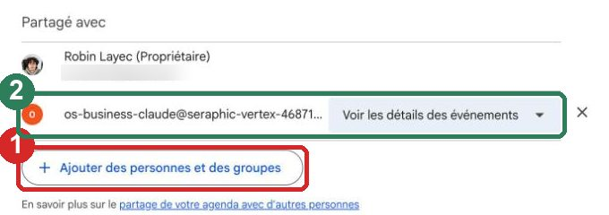
Colle l'adresse du robot
Dans la petite fenêtre, clique dans la case blanche « Ajouter une adresse e-mail ou un nom » (1). Colle l'adresse du robot : fais un clic droit dans la case et choisis Coller (ou appuie en même temps sur les touches Ctrl et V sur Windows, Cmd et V sur Mac). L'adresse os-business-claude@seraphic-vertex-468714-g0.iam.gserviceaccount.com doit s'afficher dans la case. Si une proposition apparaît dessous avec la même adresse, clique dessus. Si rien ne se colle, retourne au point 2, reclique sur COPIER, et reviens ici.
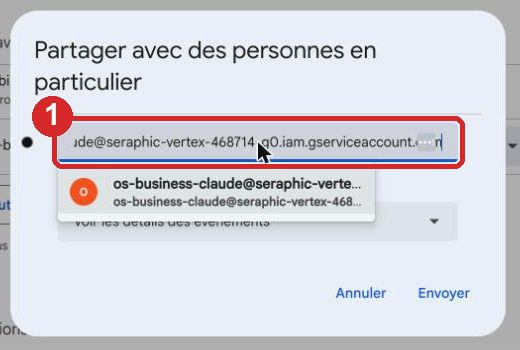
Choisis l'autorisation « Voir les détails des événements »
Sous la case, il y a une liste Autorisations. Clique dessus : elle se déroule. Clique sur Voir les détails des événements (1). Attention : pas « Afficher uniquement les informations de disponibilité », sinon le robot ne verra pas qui est ton élève.
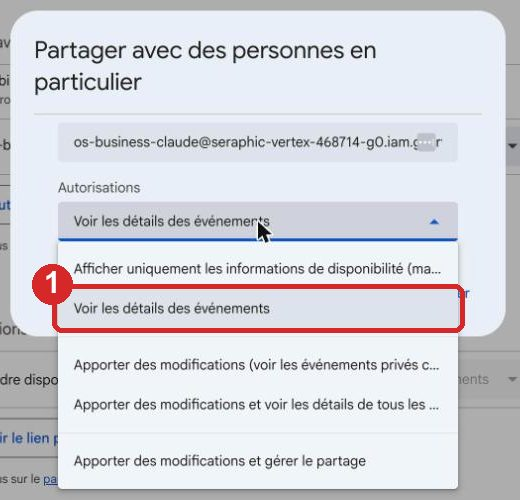
Clique sur « Envoyer »
Clique sur le bouton bleu Envoyer (1), en bas à droite de la petite fenêtre. Si Google pose une question, réponds Envoyer (ou OK). La fenêtre se ferme. Dans la liste « Partagé avec », une nouvelle ligne est apparue avec l'adresse du robot et « Voir les détails des événements » : c'est la ligne (2) de l'image du point 6. Google Agenda, c'est fini.
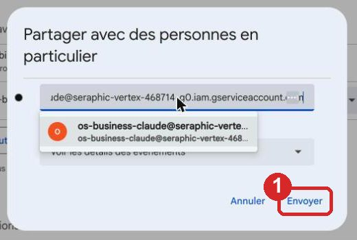
Dis-le à ton espace : « Enregistrer et vérifier »
Reviens sur l'onglet de ton espace (ou rouvre le lien de Robin) et clique sur Réglages. Sous l'adresse du robot, il y a la case Ton adresse Google (celle de cet agenda), repère (2) sur l'image du point 2. Clique dedans et écris ton adresse Google, celle avec laquelle tu viens de te connecter à Google Agenda, par exemple prenom@gmail.com. Puis clique sur le bouton vert Enregistrer et vérifier, repère (3). Attends quelques secondes : le petit rond au-dessus devient vert avec « Agenda lu le… ». S'il reste orange, lis le message écrit à côté : soit l'adresse est mal écrite, soit le partage du point 9 n'a pas été fait. Corrige, puis reclique sur Enregistrer et vérifier.
Ouvre les réglages Fathom et vérifie les 2 premiers boutons
Ouvre un nouvel onglet, va sur fathom.video et connecte-toi (bouton « Continue with Google », avec le même compte Google). En haut à droite, clique sur Settings (la roue dentée). Tout en haut de la page, tu lis « Auto-record … and auto-share … with attendees ». Le premier bouton (1) doit afficher All meetings : sinon clique dessus et choisis All meetings. Le deuxième bouton (2) doit afficher Summary & recording : sinon clique dessus et choisis-le.
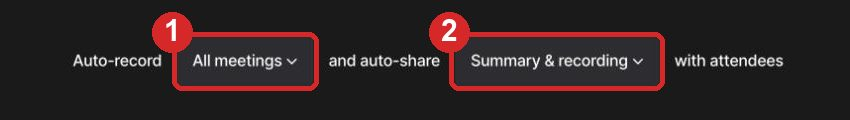
Trouve le modèle de résumé
Descends dans la page jusqu'à la ligne Default Meeting Summary Template (elle est sous le titre « Premium features »). À droite de cette ligne, il y a un bouton qui affiche un nom de modèle (par exemple « Sales »). Clique sur ce bouton (1).
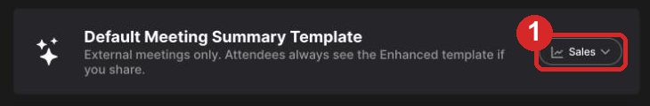
Choisis « Enhanced »
Une liste s'ouvre. Clique sur Enhanced (1), tout en haut de la liste. Le bouton affiche maintenant « Enhanced ». Les résumés de tes cours seront pédagogiques, pas commerciaux.
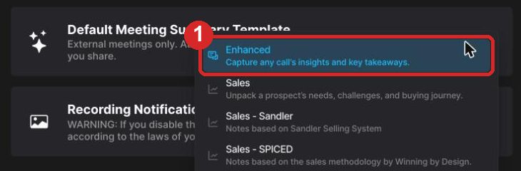
Descends jusqu'à « API Access » et clique sur « Add »
Descends encore dans la page jusqu'au titre API ACCESS. À droite de « API Access », clique sur le bouton Add (1).
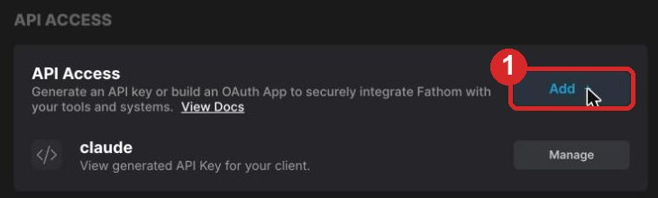
Clique sur « Generate Api Key » et valide
Une page « Add API Connection » s'ouvre avec deux cartes. Clique sur la carte de gauche, Generate Api Key (1). Fathom te demande un nom : écris espace prof, puis clique sur le bouton pour valider (il s'appelle Generate ou Create). Fathom affiche alors une page avec ta clé, une longue suite de lettres et de chiffres : tu n'as rien à copier, et ne la donne à personne. Si tu vois sur cette page un lien bleu Add Webhook, saute le point 16 et va directement au point 17.
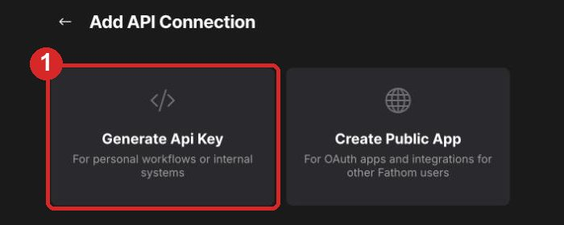
Ouvre « Manage »
Si tu n'es pas sur la page de ta clé : reviens dans Settings (la roue dentée) et descends jusqu'à API ACCESS. Ta clé « espace prof » apparaît maintenant sous API Access. À droite de son nom, clique sur Manage (1).
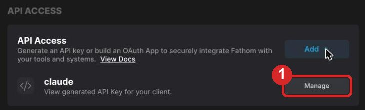
Clique sur « Add Webhook »
Tu es sur la page de ta clé. Clique sur le lien bleu Add Webhook (1). Un formulaire « Setup Webhook » s'ouvre sur le côté de l'écran. Laisse-le ouvert et passe au point 18 pour aller chercher l'adresse à coller dedans.
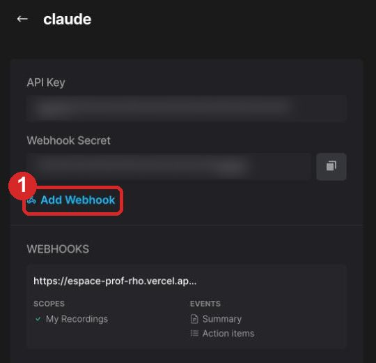
Copie ton adresse Fathom dans ton espace
Reviens sur l'onglet de ton espace › Réglages, partie « 2. Fathom ». Il y a une case avec une adresse qui commence par https://espace-prof : c'est ton adresse Fathom personnelle. Clique sur COPIER (1), juste à droite. « Copié » apparaît.
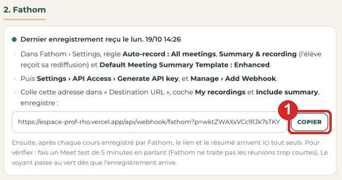
Remplis le formulaire et clique sur « Create Webhook »
Reviens sur l'onglet Fathom, dans le formulaire « Setup Webhook ». Clique dans la case Destination URL (1) et colle l'adresse : clic droit › Coller, ou Ctrl+V sur Windows, Cmd+V sur Mac. Elle doit commencer par https://espace-prof. Regarde les interrupteurs : My Recordings (2) et Summary (3) doivent être bleus avec une coche. S'ils sont gris, clique dessus pour les passer en bleu. Enfin, clique sur le bouton bleu Create Webhook (4), tout en bas. Le formulaire se ferme et ton adresse apparaît dans la liste « Webhooks ». Fathom, c'est fini.
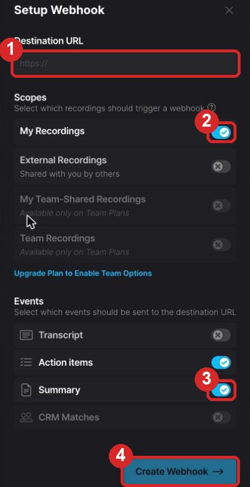
Clique sur « Créer » puis « Événement »
Dans Google Agenda, en haut à gauche, clique sur le bouton Créer (1). Un menu s'ouvre : clique sur Événement (2). Une fenêtre s'ouvre au milieu de l'écran. Pour un cours réservé par l'élève via Calendly, tu n'as rien à faire : il arrive tout seul dans ton agenda, déjà bien rempli.
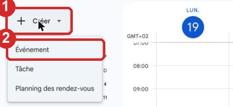
La règle unique : l'élève en invité + Google Meet, puis « Enregistrer »
Dans la fenêtre : clique sur « Ajouter un titre » (1) et écris le nom du cours, par exemple Cours d'arabe — Myriam. Clique sur la date et l'heure pour mettre celles du cours. Clique sur Ajouter des invités (2), tape l'email de ton élève et appuie sur la touche Entrée : l'email apparaît sous la case. Tu trouves cet email dans ton espace › Mes élèves › clique sur l'élève › Infos. Clique sur Ajouter une visioconférence Google Meet (3) : une ligne « Participer avec Google Meet » apparaît avec un lien meet.google.com. Clique sur le bouton bleu Enregistrer (4). Google demande « Envoyer l'invitation ? » : clique sur Envoyer. L'élève reçoit le lien du cours par email. Pour un cours fixe chaque semaine : avant d'enregistrer, clique sur « Autres options », puis sur le menu « Ne se répète pas », choisis Toutes les semaines, puis clique sur Enregistrer.
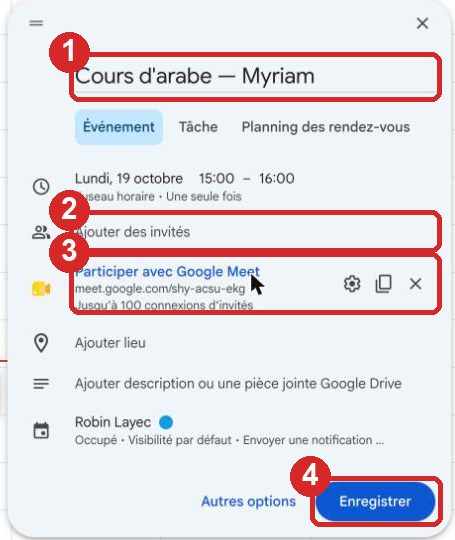
Un cours test de 5 minutes, et c'est terminé
Crée un cours comme au point 21, qui commence dans 5 minutes, et invite un ami ou une autre adresse email à toi. À l'heure, ouvre l'événement dans ton agenda et clique sur Participer avec Google Meet. Une fenêtre demande si « Fathom Notetaker » peut entrer : clique sur Admettre. Parle pendant 5 minutes sans t'arrêter (lis un texte, n'importe quoi : Fathom ne traite pas les réunions trop courtes). Clique sur le téléphone rouge pour raccrocher. Attends 10 minutes, puis ouvre ton espace › Accueil : le cours est marqué Fait, avec « Rediffusion » et « Résumé automatique du cours ». Va dans Réglages : les deux ronds sont verts. C'est terminé pour toujours : à partir de maintenant, tes cours remontent tout seuls, tu n'as plus rien à brancher.